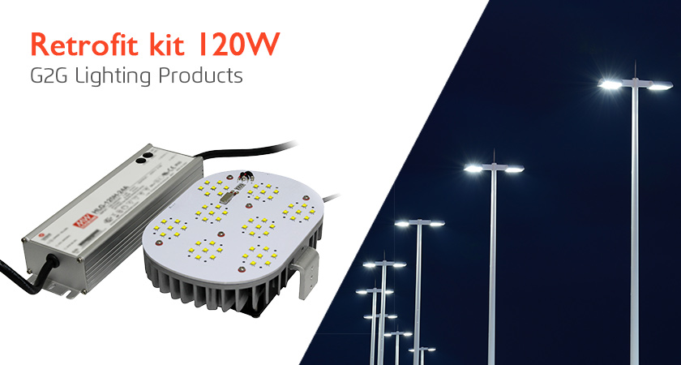

<div class="product-details margit-top110">
	<div class="container">
		<div>
			
		</div>
		<div class="row bottom-line">
			<div class="col-xs-12 col-sm-7 col-md-7">
				<p>
					G2G's LED RETROFIT lighting solutions replace essential Street Lamp and Parking Lot lighting systems with high-tech LED technology, that deliver brighter and longer lasting lighting. Ground-breaking in it's energy efficient design, and brighter than ever before, our RETROFIT Kits cater to street lights and lamps, shoe-box lighting, canopy lights, high bay lighting, lamp fixtures and more.
				</p>
			</div>
			<div class="col-xs-12 col-sm-5 col-md-5">
				<a class="download_layout" download="" href="download_files/g2g_retrofit_kit_catalog.pdf">Download The Product Catalog</a>
			</div>
		</div>
		<div class="row product-features">
			<div class="col-md-12">
			<h3 class="specification">Product Features</h3>
			<p>
				• UL certificate.
				<br> •120degree lighting
				<br> •high CRI>80Ra.
				<br> •Internal IP65  Meanwell  driver, input voltage AC100-277V.
				<br> •New style and high efficient wide-range input.
				<br> •Long lifespan 50000 hrs and good heat dissipation.

			</p>
			</div>

		</div>
		<div class="row product-features">
			<h3>Specifications</h3>
			<div class="col-md-4 features">

				<p>
					<span>Input Voltage:</span>
					<br>AC100-277V/347VAC/480VAC
				</p>
				<p>
					<span>Input Power:</span>
					<br>120W

				</p>
				<p>
					<span>Base:</span>
					<br>E26/E39
				</p>
				<p>
					<span>LED Source:</span>
					<br>56PCS CREE SMD LEDs
				</p>
			</div>
			<div class="col-md-4 features">
				<p>
					<span>Luminous:</span>
					<br>11800-12500lm
				</p>
				<p>
					<span>Color Temperature:</span>
					<br>2700-8000K
				</p>
				<p>
					<span>Fixture Material:</span>
					<br>Die-cast aluminum

				</p>

				<p>
					<span>Size:</span>
					<br>6.8"x4.9"x1.2"
				</p>

			</div>

		</div>


	</div>
</div>